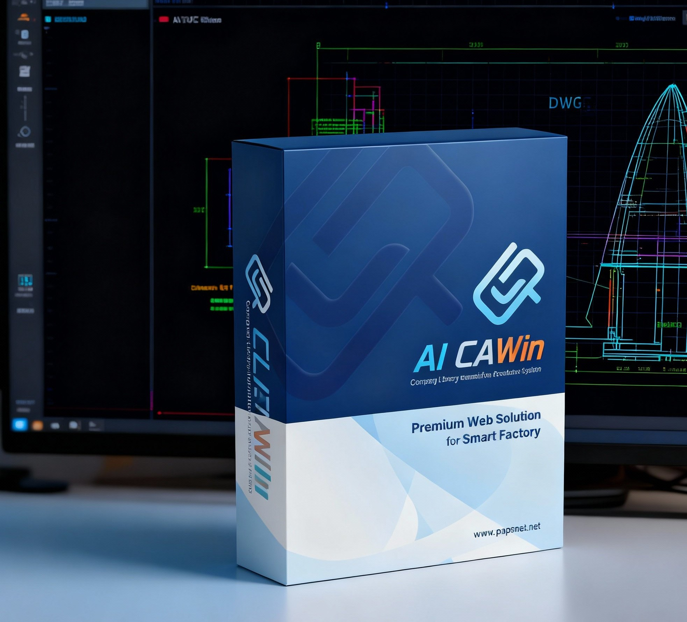

기존 도면을 다시 활용
유사 도면을 찾아 이전 설계를 검토합니다. 새로 그리기 전에 활용할 수 있는 설계 자산부터 확인하세요.
필요한 도면을 찾고, 부품 정보를 옮겨 적는 반복 업무.
AI CADWin의 도면 검색·BOM 정보 추출·Clip PDM 연계로 설계 데이터를 다시 활용하세요.
사용 중인 CAD와 도면 유형에 맞춰 적용 범위를 함께 확인합니다.

업무에 필요한 기능부터 검토하고, 적용 범위는 고객 환경에 맞춰 결정합니다.
유사 도면을 찾아 이전 설계를 검토합니다. 새로 그리기 전에 활용할 수 있는 설계 자산부터 확인하세요.
도면에서 부품 정보를 추출하고 결과를 검토합니다. 정보를 옮겨 적는 반복 업무를 줄이는 데 활용하세요.
Clip PDM과 도면·BOM 정보를 연결합니다. 설계에서 확인한 정보를 제품 데이터 관리로 이어가세요.
도입 상담에서는 실제 도면과 업무를 기준으로 필요한 기능의 결과를 함께 검토합니다.
검색된 도면을 살펴보고, 다음 설계에 활용할 후보가 있는지 확인합니다.
검토할 결과유사 도면 검색 결과
추출한 부품 정보를 도면과 대조하고, 업무에서 활용할 수 있는지 확인합니다.
검토할 결과추출된 부품 정보
도면과 BOM 정보를 Clip PDM에서 관리할 적용 범위를 함께 검토합니다.
검토할 결과제품 데이터 연계
검색과 정보 추출 결과는 도면의 상태·구성 및 도입 환경에 따라 달라질 수 있습니다.
결과 화면 시연 상담현재 업무와 시연 결과를 비교해, 귀사에 필요한 도입 효과를 확인하세요.
필요한 자료를 찾는 수고를 줄이고, 축적된 도면의 재활용 기회를 넓힙니다.
정보를 옮겨 적는 업무를 줄이고, 추출된 내용의 확인과 보완에 집중합니다.
도면과 BOM을 연결해 설계 정보를 후속 업무에서 활용할 기반을 만듭니다.
현재의 업무와 필요한 결과를 알려주시면, 적용 가능성과 시연 범위를 함께 정리합니다.
사용 중인 CAD 제품·버전과 도면 유형
도면 검색, 부품 정보 입력, 제품 데이터 연결
실제 도면에서 시연할 범위와 적용 조건
필요한 기능의 결과 화면과 도입 범위를 상담에서 확인하세요.
샘플 도면의 전달 방법은 상담 후 안내합니다.